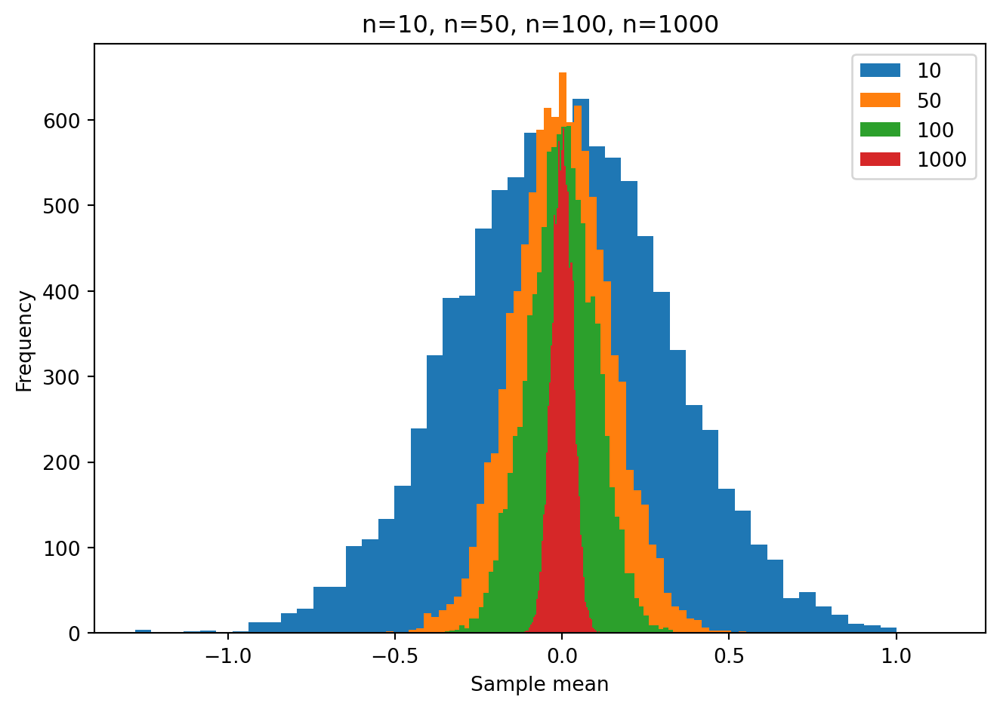
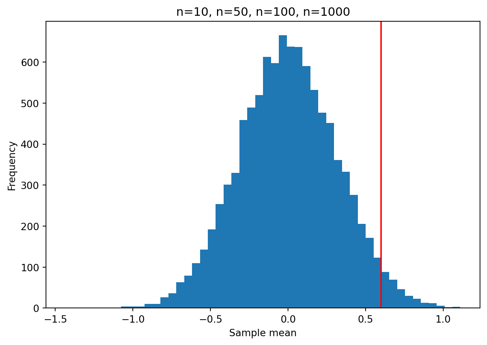
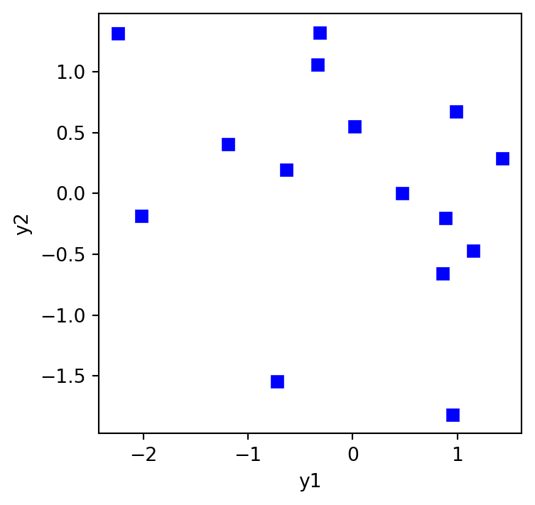
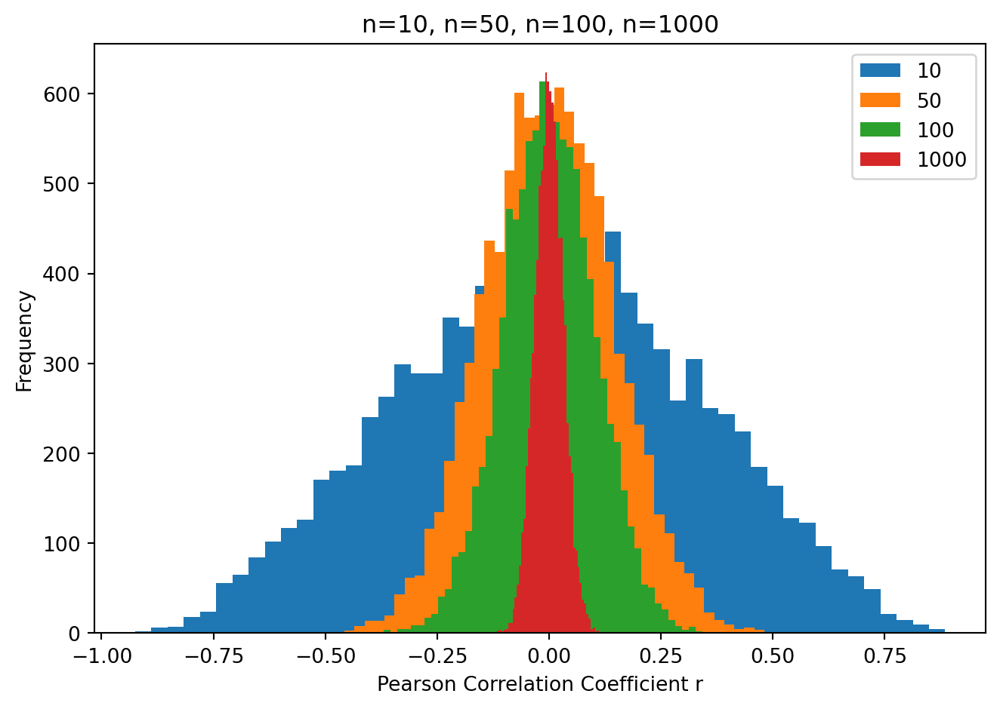
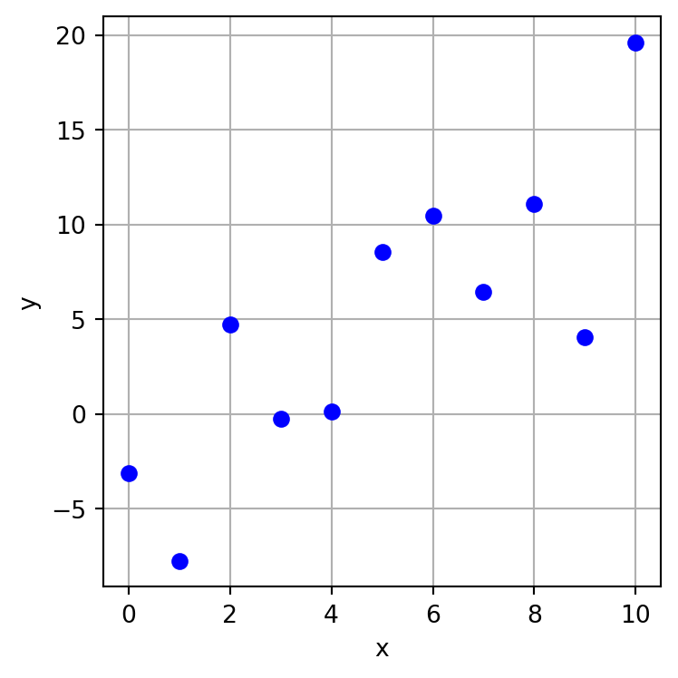
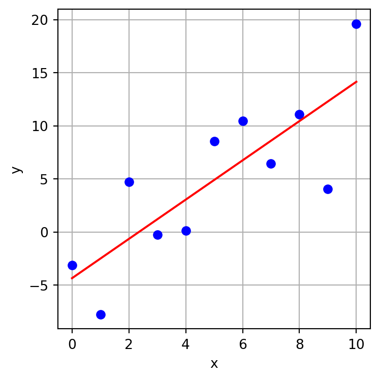

import statsmodels.stats.weightstats as sm
import numpy as np
import matplotlib.pyplot as pltStatistics: Parametric tests
1 Statsmodels & Scipy.stats
The statsmodels package is a Python module that provides classes and functions for many different kinds of statistical tests. It is a good alternative to the scipy.stats module, which we have been using so far. The statsmodels package is more comprehensive and has more options for the tests. It also has a more user-friendly interface. Here is a semi-organized list of various tests and tools Statistics stats.
On the other hand scipy.stats is more widely used and has a more extensive documentation. So it is a good idea to know how to use both. Here is a list of the tests and tools in scipy.stats scipy.stats.
Welcome to the world of Python 🤷
2 Common Parametric Statistical Tests
Let’s go over some of the tests you have probably learned about in your statistics classes in the past.
First we will load packages that we will be using:
3 One-sample t-test
Let’s generate a sample of size n=10 from a normal distribution with mean 0 and standard deviation 1:
np.random.seed(9040)
n = 10
popmean = 0
popsd = 1
y = np.random.normal(popmean, popsd, n)
yarray([ 1.6906368 , -0.75271818, 0.26192835, 0.03147374, -0.41998303,
0.90818203, 1.81479305, 0.66291534, -0.97879878, -1.10367887])Now let’s imagine we want to conduct a statistical test of the null hypothesis that the mean of the population from which the same was drawn is equal to 0. We can do this using the ztest() function:
tstat, pvalue = sm.ztest(x1=y, x2=None, value=0, alternative='two-sided')
print(f"t({n-1}) = {tstat:.3f}, p = {pvalue:.3f}")t(9) = 0.636, p = 0.525The results of our statistical test show that the t statistic is 0.636 on 9 degrees of freedom, and the p-value is 0.525. This p-value is far above any commonly used significance level (e.g. .05), so we fail to reject the null hypothesis that the mean of the population is equal to 0.
More precisely, the p-value indicates that the probability of observing a t statistic as large as 0.636 or larger if we were to take a random sample of size n=10 from a population with a mean of zero, is 0.525. This is a very large probability, so we fail to reject the null hypothesis.
Let’s repeat the “experiment” this time taking a different random sample:
np.random.seed(1236)
n = 10
popmean = 0
popsd = 1
y = np.random.normal(popmean, popsd, n)
yarray([-0.09375848, -1.69935067, 0.40455707, -1.39563456, -1.35254219,
-0.76516263, -1.3732163 , -2.00312241, 0.33949538, -0.07418577])tstat, pvalue = sm.ztest(x1=y, x2=None, value=0, alternative='two-sided')
print(f"t({n-1}) = {tstat:.3f}, p = {pvalue:.3f}")t(9) = -2.869, p = 0.004This time the t statistic is -2.869 which is much larger (farther from zero) and the p-value is much smaller, 0.004. If this were a real experiment, we would reject the null hypothesis that the mean of the population is equal to 0. We would do this because the probability of obtaining a t statistic as large (different than zero) as -2.869 if we were to take a random sample of size n=10 from a population with a mean of zero, is only 0.004. This is a very small probability, so we would reject the null hypothesis.
Remember in a real experiment we never know if the null hypothesis is true or false. All we can ever do is compute the p-value, the probability of obtaining a test statistic as large or larger than the one we obtained, if the null hypothesis were true. If that p-value is small (e.g. less than .05, or less than .01), then we conclude we’re not that lucky! We reject the null hypothesis.
3.1 The role of sample size: simulations
Remember from your introductory statistics class(es) that the sample size plays a huge role in the range of sample means that one is likely to obtain under the null hypothesis. Let’s see this in action using some simulations.
We will take a random sample of size n from a population with a true mean of zero. Then we will compute the sample mean. We will repeat this 10000 times.
We will repeat the 10000 simulatons for different sample sizes n=10, n=50, n=10, n=1000.
samp_sizes = [10, 50, 100, 1000]
nsims = 10000
for n in samp_sizes:
ymeans = np.zeros(nsims)
for i in range(nsims):
y = np.random.normal(0, 1, n)
ymeans[i] = np.mean(y)
plt.hist(ymeans, bins=50)
plt.xlim = (-1.1, 1.1)
plt.legend(samp_sizes)
plt.title("n=10, n=50, n=100, n=1000")
plt.xlabel("Sample mean")
plt.ylabel("Frequency")
plt.tight_layout()
You can clearly see that as the sample size increases, the range of sample means we get, under the null hypothesis, gets smaller. This is why the p-value is so much smaller for a given t statistic when the sample size is larger. It reflects the fact that is is more unlikely to see a given non-zero sample mean (and non-zero t statistic) as the sample size increases.
For example if we did one experiment with a sample size of n=10 and we obtained a sample mean of 0.60, what is the probability of obtaining this under the null hypothesis that the true mean of the population from which the random sample was taken, is zero? That is the p-value. You can see in the plot below that it is pretty unlikely to happen.
nsims = 10000
n = 10
ymeans = np.zeros(nsims)
for i in range(nsims):
y = np.random.normal(0, 1, n)
ymeans[i] = np.mean(y)
plt.hist(ymeans, bins=50)
plt.xlim = (-1.1, 1.1)
plt.axvline(0.60, color="red")
plt.title("n=10, n=50, n=100, n=1000")
plt.xlabel("Sample mean")
plt.ylabel("Frequency")
plt.tight_layout()
We can estimate this probability by counting the number of simulated cases in which the sample mean was equal or greater than 0.60, and dividing by the total number of simulated cases. This is the empirical p-value.
pvalue_empirical = len(ymeans[ymeans >= 0.60]) / len(ymeans)
print(f"p-value = {pvalue_empirical:.3f}")p-value = 0.029We can of course compute this p-value using a parametric statistical test, without having to run 10,000 simulations, e.g. a one-sample t-test, as above:
np.random.seed(8329) # chosen by me strategically to get a sample mean of 0.60
y = np.random.normal(0, 1, 10) # run the experiment once
print(f"sample mean = {np.mean(y):.3f}")sample mean = 0.599tstat, pvalue = sm.ztest(x1=y, x2=None, value=0, alternative='two-sided')
print(f"t({n-1}) = {tstat:.3f}, p = {pvalue:.3f}")t(9) = 2.162, p = 0.031The p-value we get from the parametric test is very close to the empirical p-value we computed above.
4 t-test for two independent samples
Let’s say we do an experiment and obtain two random samples of size n=10 from two different populations. We want to know if the two populations have the same mean. We can do this using a two-sample t-test.
np.random.seed(1234)
n = 10
popmean1 = 0
popmean2 = 0
popsd = 1
y1 = np.random.normal(popmean1, popsd, n)
y2 = np.random.normal(popmean2, popsd, n)
print(f"The mean of the first sample is {np.mean(y1):.3f}")
print(f"The mean of the second sample is {np.mean(y2):.3f}")The mean of the first sample is -0.144
The mean of the second sample is 0.121tstat, pvalue, df = sm.ttest_ind(y1, y2, alternative='two-sided')
print(f"t({df}) = {tstat:.3f}, p = {pvalue:.3f}")t(18.0) = -0.527, p = 0.605The p-value is above .05 and so we fail to reject the null hypothesis that the two populations have the same mean. This is what we would expect because we simulated the data from two populations with the same mean.
Let’s now change the mean of the second population to 1.0 and see what happens.
np.random.seed(1234)
n = 10
popmean1 = 0
popmean2 = 1
popsd = 1
y1 = np.random.normal(popmean1, popsd, n)
y2 = np.random.normal(popmean2, popsd, n)
print(f"The mean of the first sample is {np.mean(y1):.3f}")
print(f"The mean of the second sample is {np.mean(y2):.3f}")The mean of the first sample is -0.144
The mean of the second sample is 1.121tstat, pvalue, df = sm.ttest_ind(y1, y2, alternative='two-sided')
print(f"t({df}) = {tstat:.3f}, p = {pvalue:.3f}")t(18.0) = -2.517, p = 0.022The p-value is below .05 and so we reject the null hypothesis that the two populations have the same mean.
5 t-test for two paired samples
Apparently there is no paired-samples t-test in statsmodels. Scipy.stats does have one though so let’s use that:
np.random.seed(1234)
n = 10
popmean1 = 0
popmean2 = 0
popsd = 1
y1 = np.random.normal(popmean1, popsd, n)
y2 = np.random.normal(popmean2, popsd, n)
print(f"The mean of the first sample is {np.mean(y1):.3f}")
print(f"The mean of the second sample is {np.mean(y2):.3f}")The mean of the first sample is -0.144
The mean of the second sample is 0.121import scipy.stats as stats
tstat, pvalue = stats.ttest_rel(y1, y2)
print(f"t({n-1}) = {tstat:.3f}, p = {pvalue:.3f}")t(9) = -0.729, p = 0.484The p-value is above .05 and so we fail to reject the null hypothesis.
6 Correlation tests
Let’s say we have two random samples of size n=15 from two different populations. We want to know if the two populations are correlated. We can do this using a correlation test.
np.random.seed(1234)
n = 15
popmean1 = 0
popmean2 = 0
popsd = 1
y1 = np.random.normal(popmean1, popsd, n)
y2 = np.random.normal(popmean2, popsd, n)
plt.figure(figsize=(4,4))
plt.plot(y1,y2,'bs')
plt.xlabel("y1")
plt.ylabel("y2")
plt.show()
out = stats.pearsonr(y1, y2)
print(f"r = {out[0]:.3f}, p = {out[1]:.3f}")
print(f"95% CI on r: {out.confidence_interval(0.95)}")r = -0.315, p = 0.252
95% CI on r: ConfidenceInterval(low=np.float64(-0.7125755629533768), high=np.float64(0.23472947261268048))The p-value is above .05 and so we fail to reject the null hypothesis that the true correlation between the two populations is zero. This is what we would expect because we simulated the data from two populations with no correlation.
6.1 Role of sample size
Again as above, there is a powerful effect of sample size on the probability of obtaining large correlations under the null hypothesis. Let’s repeat the simulations above but instead of testing sample mean against zero we will test the correlation between two random samples, under the null hypothesis in which the two samples are taken from populations with a correlation of zero.
samp_sizes = [10, 50, 100, 1000]
nsims = 10000
for n in samp_sizes:
rvalues = np.zeros(nsims)
for i in range(nsims):
y1 = np.random.normal(0, 1, n)
y2 = np.random.normal(0, 1, n)
rvalues[i] = stats.pearsonr(y1, y2)[0]
plt.hist(rvalues, bins=50)
plt.xlim = (-1.1, 1.1)
plt.legend(samp_sizes)
plt.title("n=10, n=50, n=100, n=1000")
plt.xlabel("Pearson Correlation Coefficient r")
plt.ylabel("Frequency")
plt.tight_layout()
What you can see is when the sample size is small (e.g. 10) we can expect to see a very large range of correlation coefficients under the null hypothesis (i.e. when the two samples are taken from populations with a true correlation equal to zero). As the sample size increases, the range of correlation coefficients shrinks.
So if we do an experiment with a small sample size, we would need to obtain a very large (far from zero) correlation coefficient in order to reject the null hypothesis that the two populations are uncorrelated.
7 One-way Between Subjects ANOVA
Let’s say we do an experiment and obtain three random samples of size n=10 from three different populations. We want to know if the three populations have the same mean. We can do this using a one-way between subjects ANOVA.
np.random.seed(1234)
n = 10
popmean1 = 0
popmean2 = 0
popmean3 = 0
popsd = 1
y1 = np.random.normal(popmean1, popsd, n)
y2 = np.random.normal(popmean2, popsd, n)
y3 = np.random.normal(popmean3, popsd, n)
print(f"The mean of the first sample is {np.mean(y1):.3f}")
print(f"The mean of the second sample is {np.mean(y2):.3f}")
print(f"The mean of the third sample is {np.mean(y3):.3f}")The mean of the first sample is -0.144
The mean of the second sample is 0.121
The mean of the third sample is 0.047out = stats.f_oneway(y1, y2, y3)
print(f"F = {out.statistic:.3f}, p = {out.pvalue:.3f}")F = 0.166, p = 0.848If we want to get a full ANOVA table in the usual way, we can use the statsmodels library. We need to create a dataframe with the data and then use the ols function to fit a model to the data. The anova_lm function then gives us the ANOVA table. This is a bit more complicated than the other tests we have seen so far but it is very flexible and can be used to do many different types of ANOVA. It is reminiscent of the lm function in R.
import statsmodels.api as sm
from statsmodels.formula.api import ols
import pandas as pd
df = pd.DataFrame({'y': np.concatenate((y1, y2, y3)),
'group': np.concatenate((np.repeat('A', n),
np.repeat('B', n),
np.repeat('C', n)))})
model = ols('y ~ group', data=df).fit()
anova_table = sm.stats.anova_lm(model, typ=3)
print(anova_table) sum_sq df F PR(>F)
Intercept 0.206449 1.0 0.183477 0.671800
group 0.373295 2.0 0.165878 0.848006
Residual 30.380549 27.0 NaN NaN8 Linear Regression
We can use statsmodels.OLS() to perform a linear regression using ordinary least squares to fit the model coefficients. (OLS is likely what you learned about in your introduction to statisics class(es)).
import matplotlib.pyplot as plt
import numpy as np
import pandas as pd
import statsmodels.api as sm
np.random.seed(1234)
n = 11
x = np.linspace(0, 10, n)
y = -5 + 2*x + np.random.normal(0, 4, size=n)
plt.figure(figsize=(4,4))
plt.plot(x,y,'bo')
plt.xlabel("x")
plt.ylabel("y")
plt.grid()
plt.tight_layout()
plt.show()
We will fit a model of the following form:
\hat{y_{i}} = \beta_0 + \beta_1 x_{i} + \varepsilon_{i}
where \hat{y_{i}} is the predicted value of y for the ith observation, \beta_0 is the model intercept, \beta_1 is the model slope, and \varepsilon_{i} is the error term.
For the statsmodels.OLS() function we will need to add a column of ones to the x data to account for the intercept term in the model.
X = sm.add_constant(x)
print(X)[[ 1. 0.]
[ 1. 1.]
[ 1. 2.]
[ 1. 3.]
[ 1. 4.]
[ 1. 5.]
[ 1. 6.]
[ 1. 7.]
[ 1. 8.]
[ 1. 9.]
[ 1. 10.]]model = sm.OLS(y, X)
results = model.fit()
print(results.summary()) OLS Regression Results
==============================================================================
Dep. Variable: y R-squared: 0.654
Model: OLS Adj. R-squared: 0.616
Method: Least Squares F-statistic: 17.03
Date: Fri, 27 Mar 2026 Prob (F-statistic): 0.00257
Time: 14:53:35 Log-Likelihood: -31.530
No. Observations: 11 AIC: 67.06
Df Residuals: 9 BIC: 67.86
Df Model: 1
Covariance Type: nonrobust
==============================================================================
coef std err t P>|t| [0.025 0.975]
------------------------------------------------------------------------------
const -4.3529 2.652 -1.642 0.135 -10.352 1.646
x1 1.8497 0.448 4.127 0.003 0.836 2.864
==============================================================================
Omnibus: 0.653 Durbin-Watson: 2.798
Prob(Omnibus): 0.721 Jarque-Bera (JB): 0.631
Skew: -0.388 Prob(JB): 0.729
Kurtosis: 2.120 Cond. No. 11.3
==============================================================================
Notes:
[1] Standard Errors assume that the covariance matrix of the errors is correctly specified.The model output tells us that the intercept is -4.3529 and the slope is 1.8497. The R-squared for the model is 0.654 which tells us that 65.4 % of the variance in y is accounted for by x. The p-value for the slope is 0.003 which tells us that it is unlikely that we could have obtained a slope as large (far from zero) as we did if the samples were taken from populations for which the true slope was zero.
We can plot the model fit over the data.
plt.figure(figsize=(4,4))
plt.plot(x,y,'bo')
plt.plot(x, results.predict(X), 'r-')
plt.xlabel("x")
plt.ylabel("y")
plt.grid()
plt.tight_layout()
plt.show()
9 Other Resources
See the statsmodels documentation for more information on the various statistical tests and models available in the library. The statsmodels package is oriented at statisticians and so is very flexible and provides a lot of statistical information and functionality. Look over the documentation to familiarize yourself with what is available.
The scipy.stats package may be easier to navigate for you for simple statistical procedures. The scipy.stats package is oriented at scientists and so is more focused on basic functionality needed for scientific research. Look over the documentation to familiarize yourself with what is available.